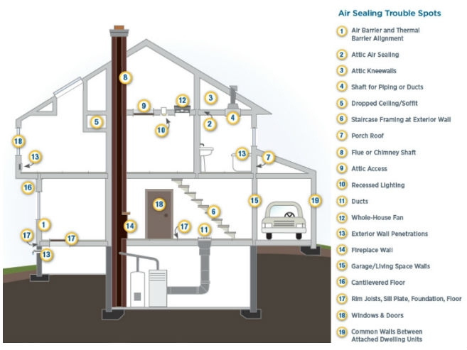

April 1, 2016
Getting Air Tight

You say the word “Audit” during tax season and folks are a little skittish but a Home Energy Audit can turn your home into a smooth running machine.
During an Audit your home is tested to see how airtight it is which will lower your energy consumption, prevent moisture condensation and help maintain indoor air quality.
The auditor mounts a blower door fan into the frame of an exterior door. The fan pulls air out of the house, lowering the air pressure inside. The higher outside air pressure then flows in through all unsealed cracks and openings. The average home has gaps that are equivalent to leaving a window open 24 hr a day. That’s a lotta lost hot air!
You can also check for leaks on your own. One good trick is to shut a door or window on a dollar bill. If you can pull the dollar bill out without it dragging, you’re losing energy. Or if you can rattle a window or wiggle a cable coming through an exterior wall, you have a leak.